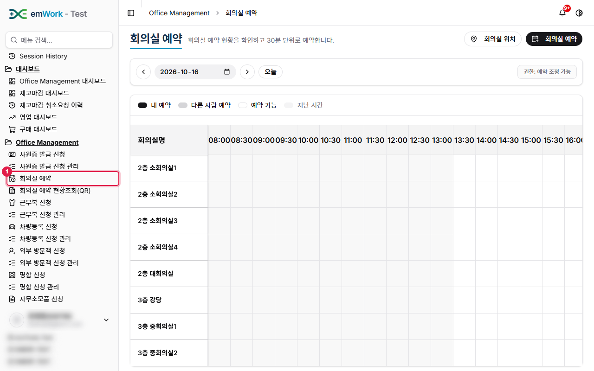
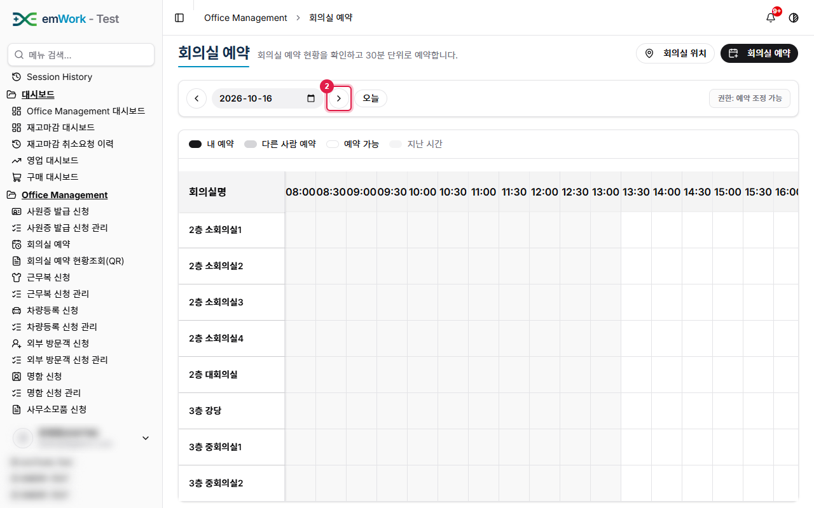
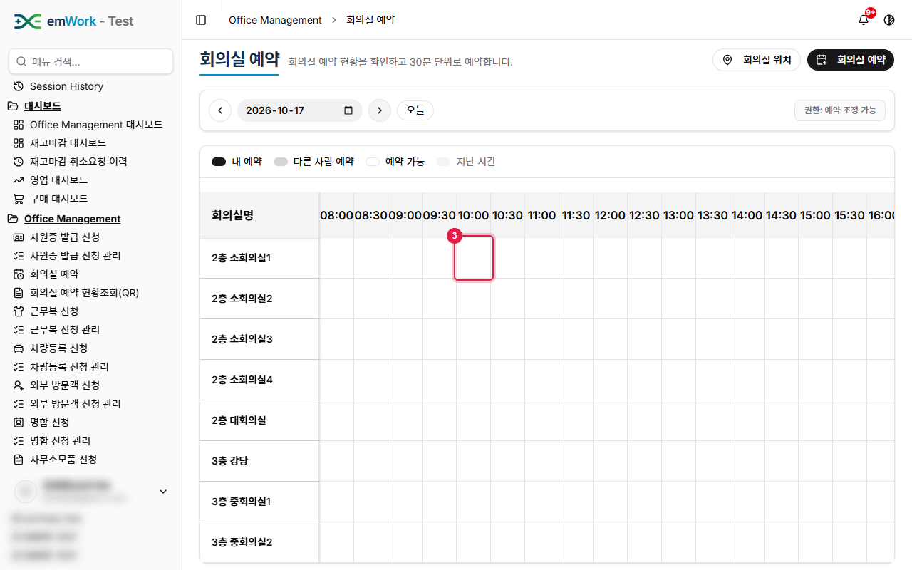
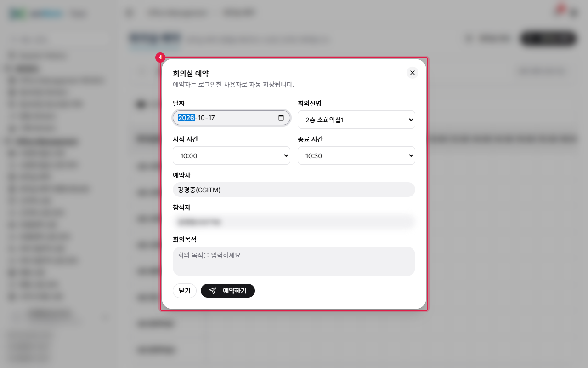
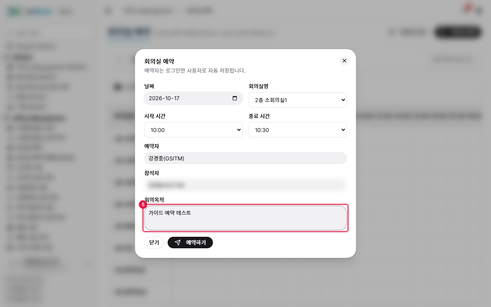
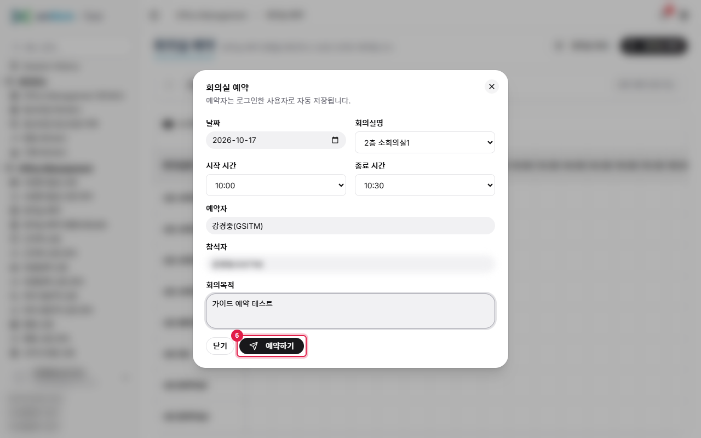
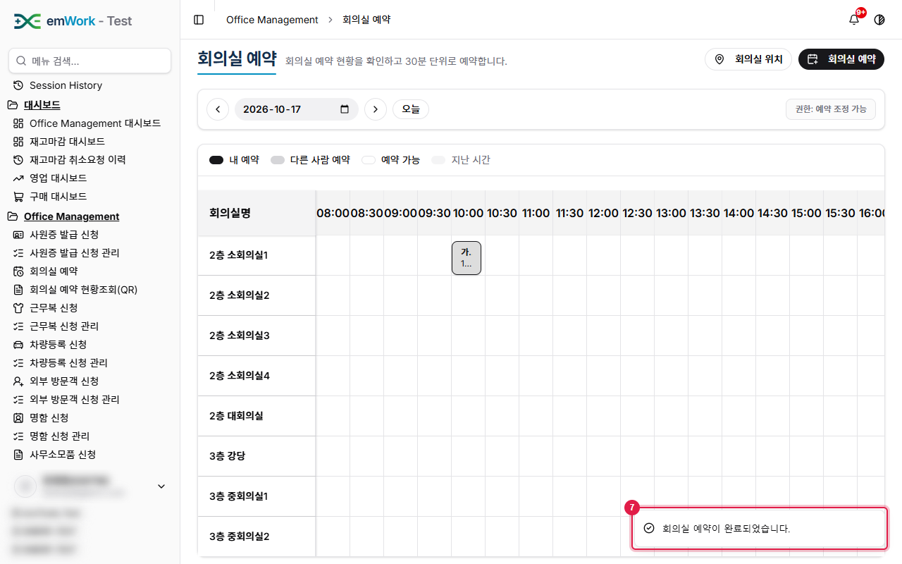
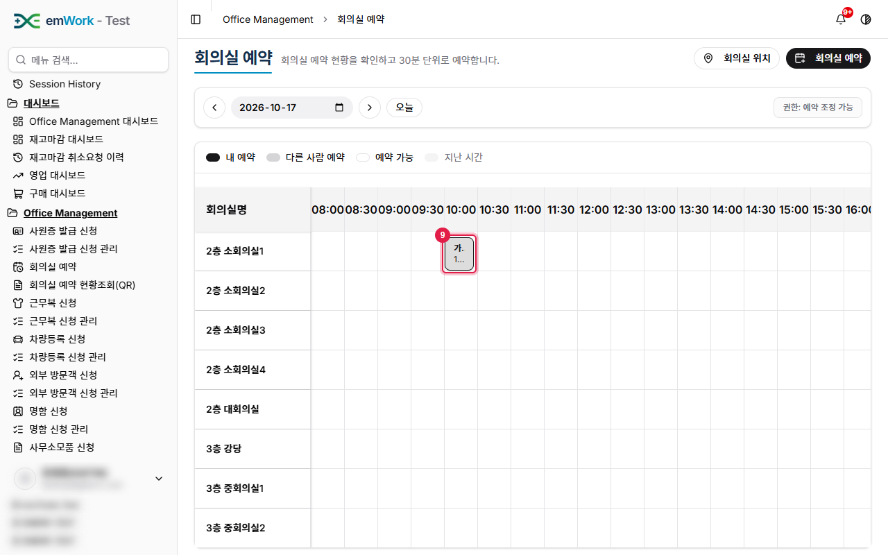
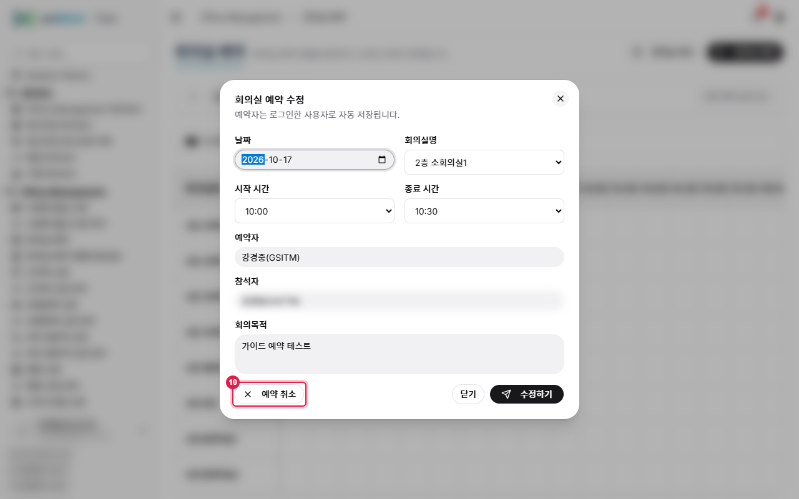
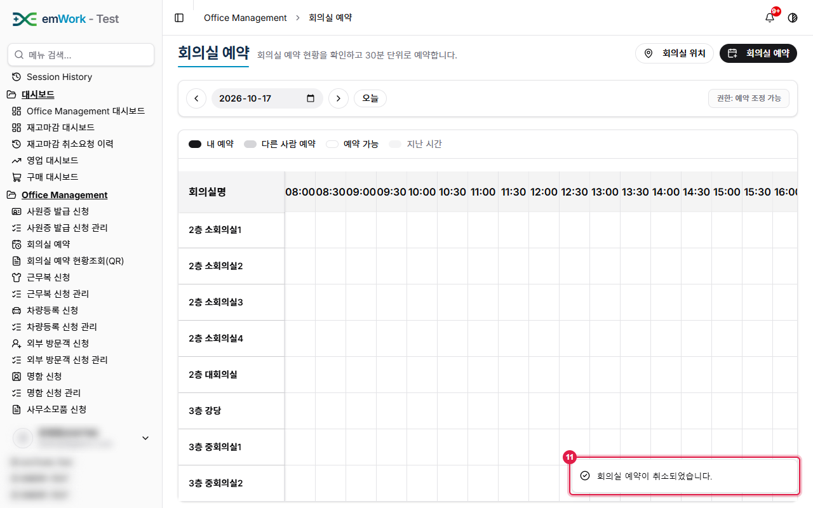

work4ERP 사용자 가이드 › Office Management
회의실 예약
주요 내용
- 회의실 위치별 시간표를 보고 빈 시간에 회의실을 예약합니다.
주의 사항
- 지난 시간은 예약할 수 없습니다. 시간표는 30분 단위입니다.
- 예약자는 로그인한 사용자로 자동 저장됩니다.
기능 요약
- 날짜 이동(이전/다음/오늘)과 회의실 위치 선택.
- 빈 칸 클릭 → 참석자·회의목적 입력 후 예약.
- 예약된 칸 클릭 → 수정하기 / 예약 취소.
1
'회의실 예약'을(를) 클릭합니다. 회의실 예약 화면입니다. 날짜와 회의실 위치를 골라 시간표를 확인하고, 빈 시간을 클릭해 예약합니다.

2
'이전 날짜'/'다음 날짜'/'오늘' 버튼으로 날짜를 이동합니다. 지난 시간은 예약할 수 없어 내일 시간표로 이동합니다.

3
시간표에서 빈 칸(예: 2층 소회의실1 10:00)을 클릭합니다.

4
예약 창에서 날짜·회의실·시작/종료 시간을 확인합니다. 예약자는 로그인한 사용자로 자동 입력되고, 참석자와 회의목적을 입력합니다.

5
회의목적을 입력합니다.

6
'예약하기' 버튼을 클릭합니다.

7
예약이 완료되면 완료 메시지(토스트)가 표시됩니다.

8
예약된 시간은 시간표에 회의 목적과 함께 표시됩니다.
9
예약 내용을 수정하거나 취소하려면 예약된 칸을 클릭합니다.

10
'예약 취소'를 클릭하면 예약이 취소됩니다. '수정하기'로 시간·참석자·회의목적을 바꿀 수도 있습니다.

11
취소되면 완료 메시지(토스트)가 표시됩니다.
